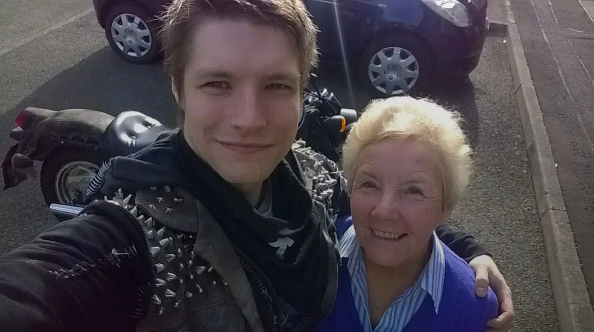
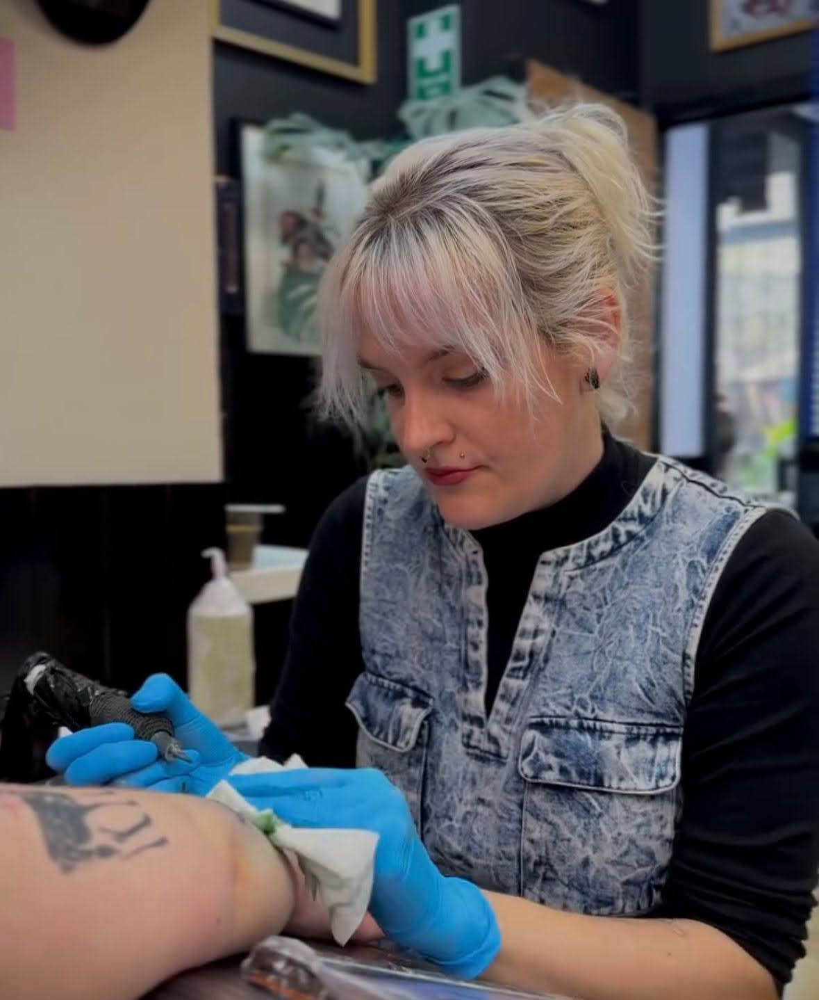
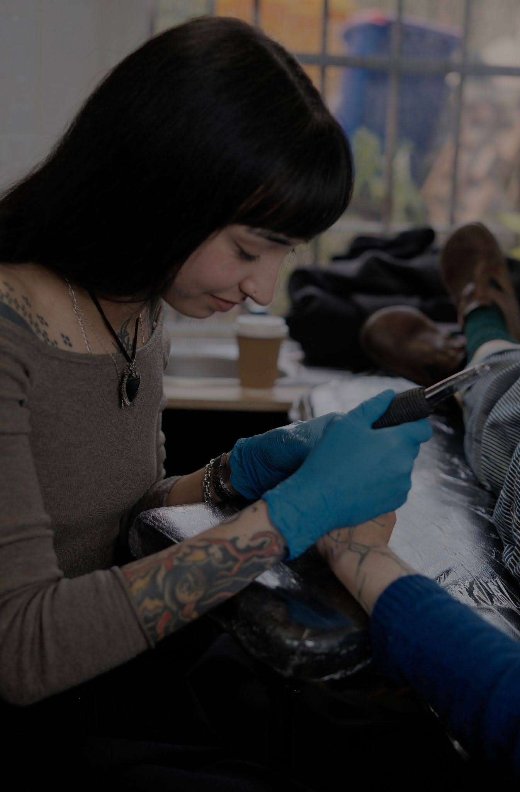
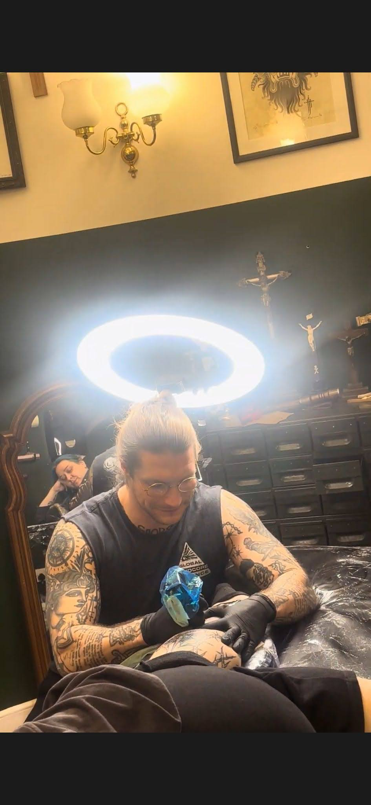
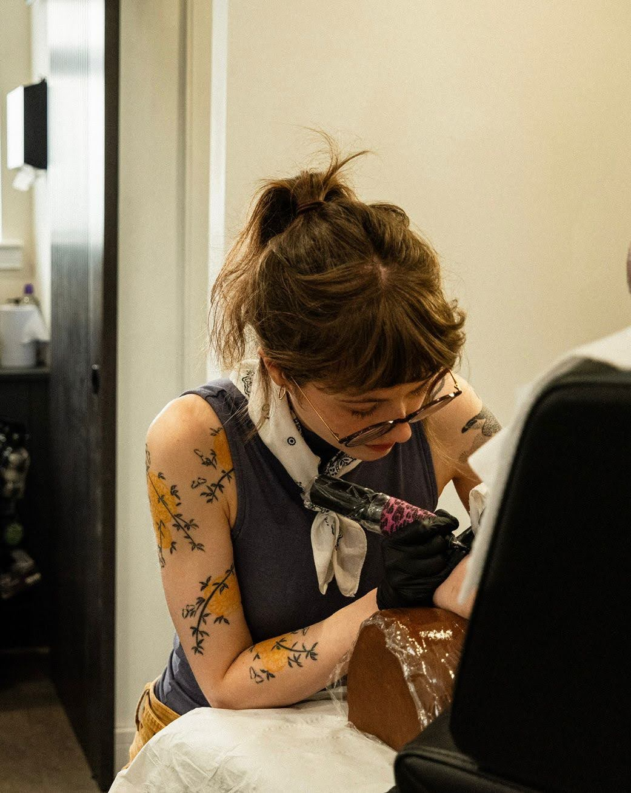
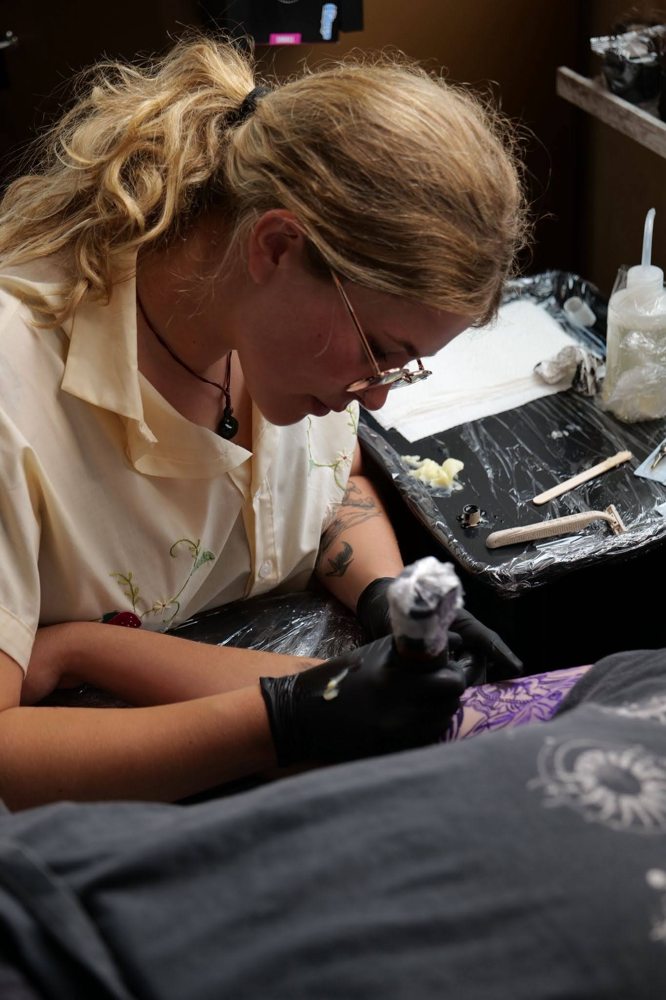

.PNG)
Nestled in the heart of Edinburgh, Gran's House Tattoos is a studio built on warmth, craft, and a deep respect for the art of tattooing. Named after the kind of place that always felt like home — full of character, colour and good tea — we bring that same welcoming spirit to every appointment.
Our artists specialise in illustrative, neo-tribal, and realism styles, drawing inspiration from Scotland's rich heritage: from Highland mythology to classic cross-stitch embroidery and the rugged beauty of the glens.
Every piece is bespoke. Every client leaves with a story stitched into their skin.

Whimsical and story-driven artwork, ranging from delicate fine-line pieces to bold, graphic illustrations.
Modern takes on tribal aesthetics, blending sharp, flowing linework with contemporary organic forms.
High-fidelity detail in a range of sizes, specialising in portraits, flora, and life-like textures.
Machine-free, delicate tattooing with a unique, artisanal texture and a gentle process.
Experimental and expressive designs that focus on form, flow, and artistic intuition over literal representation.
Expertly transforming or reviving existing tattoos with thoughtful planning and creative execution.

Hey! I’m Chloé, an American born lady living in Edinburgh. My tattooing style is
realism and micro realism in both color and black and grey. I particularly love doing portraits, animals,
florals and shiny things.
When I’m not tattooing I love getting outside for a hike with my husband
and my pup, reading, writing, drawing, painting, and spending time with friends and family. I’m also a big
fan of tarot, astrology and all things witchy. Let’s chat star signs and fairy smut :D
See you at
Gran’s House <3

Hey!
I’m Alba, a handpoke tattoo artist from Spain based in Edinburgh.
My style of tattooing is mostly ornamental, gothic and dotwork based portraits, paintings… etc.
Most of my work is done in black but I’m always happy to work with a pop of colour!
Some of my
other hobbies outside of making art are music, cooking, nature and specially books and reading!
So
always open to hear all of your book recommendations to include them on my book club’s endless list!
See you at Gran’s House!

I’m Jamie, a tattooer based in Edinburgh and the person behind Gran’s House.
I
make tattoos that sit somewhere between fine line, tribal, and stuff I’m pulling from medieval imagery and
whatever else I’m into at the time. Everything I do is custom — I’d rather make something that actually
feels like you than just copy and paste ideas.
Gran’s House is named after my gran. I wanted to
build a space that feels how her house felt — comfortable, open, no pressure. Somewhere you can come in,
feel at ease, and leave with something meaningful.
I’m also into music and a bunch of other
creative stuff, but tattooing’s always been the main thing. At the end of the day I just want to make good
work and create an environment where people feel welcome.

Emily creates unique tattoos inspired by antique textiles, tile patterns, Japanese woodblock prints and loose, flowing ink brush paintings. She is interested in experimenting with linework and texture to give an organic touch, and making sure designs flow beautifully on the body. Expect friendly chats about music, films, books, anime, gaming and her two cats!
@emilyjanefulton
Hey! I'm Lily, originally from New Zealand and now based right here in Edinburgh. I
specialise in linocut and etching style tattoos, focusing on bold lines and rich textures that really
stand out.
I love bringing the classic feel of printmaking into my tattoo work, giving every piece
a unique, hand-crafted look. When I'm not in the studio, you'll probably find me exploring the city or
working on new designs.
Can't wait to see you at Gran's House!
Follow our work in progress and flash announcements on Instagram: @granshouse.tattoo
To make a booking request, please click the button below to complete our inquiry form on Google Forms.
Provide details about your idea, preferred artists, sizing, placement, and upload your reference images directly.
Start Booking Request ✦Gran’s House
37 1F2 Queensferry St.
Edinburgh EH2 4QS
Sunday – Tuesday
11:00 – 18:00
We're open for walk-ins during our studio hours. Pop in and say hello!